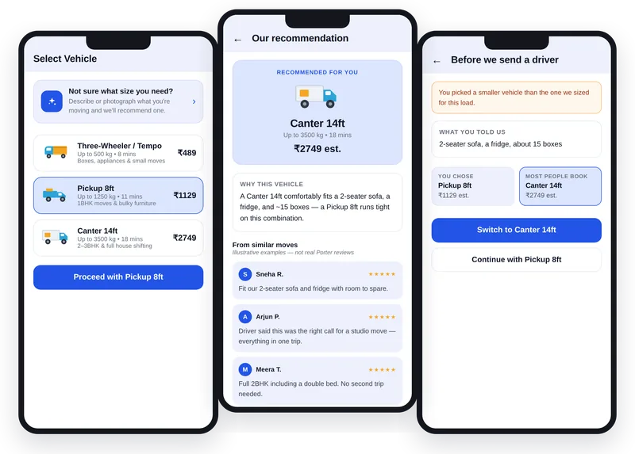

Airtribe capstone · Logistics marketplace
Building first-time confidence at Porter
An AI vehicle-sizing assistant that helps first-time customers pick the right vehicle, so more of them complete a first trip.
From the briefLift first-trip completion for Porter's individual customers from 41% to 58% within six months. The research, the diagnosis, the sizing and the solution are mine.
Problem
59% of first-time customers who reach the vehicle-selection screen never complete a trip. They have to turn a sofa, a fridge or a room of boxes into a vehicle category, and nothing in the app tells them which one fits.
What I found
The loudest complaint wasn't the real barrier. Vehicle-fit uncertainty showed up in just 2% of 220 Porter reviews, yet all three independent sources named it: the review corpus, the survey and the interviews. People who can't size a load leave before booking, so they never write a review. Of the three barriers every source named, it's the only one that gates the whole funnel.
The call
RICE put a guided item configurator and an itemised fare breakdown on top at 2.40 each. Neither answered the barrier as directly, so I built the vehicle-sizing assistant (0.90), the only option with maximum impact, and argued the configurator as the runner-up.
What I delivered
A PRD, a four-release roadmap, an eight-screen interactive prototype, a holdout-gated rollout (shadow, then 5%, 25% and 100%), a North Star metric with 12 KPIs and 5 guardrails, and a 17-risk register with kill criteria set in advance.

- 427app reviews mined across Porter, Rapido and Uber
- 21conversations: 17 survey responses and 4 interviews
- 10solutions scored with RICE before choosing one
- ₹42.8 Cra year at target; ₹28.6–57.1 Cr across the softest assumption